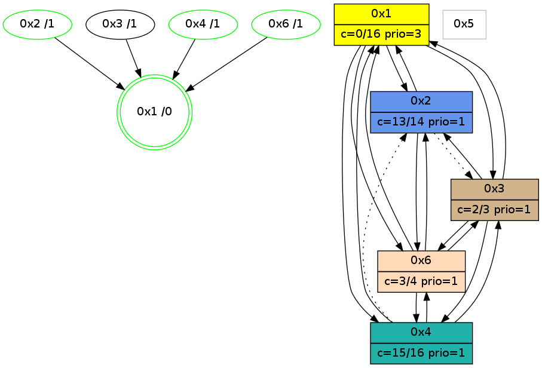

>> << IDX [start] -100 -25 -5 +0 +5 +25 [1175.15166402]
 Previous packets
----------------------------------------------------------------------
1170.129137 beacon01(adaf) #0 coord=01,02,05,03,04,06 cycle=944.0ms assoc
-- color-indic=0 64 2f 40
1170.139099 beacon02(adaf) #0 coord=01,02,05,03,04,06 cycle=944.0ms assoc 64 7e bf
1170.149099 beacon05(adaf) #0 coord=01,02,05,03,04,06 cycle=944.0ms assoc 64 d8 95
1170.159099 beacon03(adaf) #0 coord=01,02,05,03,04,06 cycle=944.0ms assoc 64 44 b1
1170.169098 beacon04(adaf) #0 coord=01,02,05,03,04,06 cycle=944.0ms assoc 64 e2 9b
1170.179099 beacon06(adaf) #0 coord=01,02,05,03,04,06 cycle=944.0ms assoc 64 96 87
1170.190232 [Hello(1): seq=860 sym=2,4,6,3 color=0 sysInfo=hasWarning,MaxColorIndicationCalled,MaxColorResponseCalled,MaxColorRequestCalled,ColoringModeRequestCalled stat=2:12,3,3,0/4:0,0,0,0/6:0,2,8,0/3:7,0,4,0]
1170.194483 [Hello(4): seq=959 sym=1,3,6 asym=2 sysInfo=hasWarning,MaxColorIndicationCalled,ColoringModeIndicationCalled,MaxColorResponseCalled stat=1:6,11,11,0/3:9,0,1,0/6:3,0,1,0/2:0,0,0,0]
----------------------------------------------------------------------
1171.133643 beacon01(adaf) #0 coord=01,02,05,03,04,06 cycle=944.0ms assoc
-- color-indic=0 64 eb 2f
1171.143604 beacon02(adaf) #0 coord=01,02,05,03,04,06 cycle=944.0ms assoc 64 ba d0
1171.153604 beacon05(adaf) #0 coord=01,02,05,03,04,06 cycle=944.0ms assoc 64 1c fa
1171.163604 beacon03(adaf) #0 coord=01,02,05,03,04,06 cycle=944.0ms assoc 64 80 de
1171.173604 beacon04(adaf) #0 coord=01,02,05,03,04,06 cycle=944.0ms assoc 64 26 f4
1171.183605 beacon06(adaf) #0 coord=01,02,05,03,04,06 cycle=944.0ms assoc 64 52 e8
1171.195311 [Hello(3): seq=958 sym=6,2,1,4 color=2 sysInfo=hasWarning,MaxColorIndicationCalled,ColoringModeIndicationCalled,MaxColorResponseCalled stat=6:1,0,0,0/2:0,0,0,0/1:6,15,8,1/4:3,10,2,1]
----------------------------------------------------------------------
1172.138148 beacon01(adaf) #0 coord=01,02,05,03,04,06 cycle=944.0ms assoc
-- color-indic=0 64 a7 9f
1172.148109 beacon02(adaf) #0 coord=01,02,05,03,04,06 cycle=944.0ms assoc 64 f6 60
1172.158110 beacon05(adaf) #0 coord=01,02,05,03,04,06 cycle=944.0ms assoc 64 50 4a
1172.168110 beacon03(adaf) #0 coord=01,02,05,03,04,06 cycle=944.0ms assoc 64 cc 6e
1172.178109 beacon04(adaf) #0 coord=01,02,05,03,04,06 cycle=944.0ms assoc 64 6a 44
1172.188110 beacon06(adaf) #0 coord=01,02,05,03,04,06 cycle=944.0ms assoc 64 1e 58
1172.199847 [Hello(4): seq=960 sym=1,3,6 asym=2 sysInfo=hasWarning,MaxColorIndicationCalled,ColoringModeIndicationCalled,MaxColorResponseCalled stat=1:6,11,11,0/3:10,0,1,0/6:3,0,1,0/2:0,0,0,0]
1172.202590 [Hello(1): seq=861 sym=2,4,6,3 color=0 sysInfo=hasWarning,MaxColorIndicationCalled,MaxColorResponseCalled,MaxColorRequestCalled,ColoringModeRequestCalled stat=2:13,3,3,0/4:0,0,0,0/6:1,2,8,0/3:7,0,4,0]
----------------------------------------------------------------------
1173.142654 beacon01(adaf) #0 coord=01,02,05,03,04,06 cycle=944.0ms assoc
-- color-indic=0 64 63 f0
1173.152617 beacon02(adaf) #0 coord=01,02,05,03,04,06 cycle=944.0ms assoc 64 32 0f
1173.162615 beacon05(adaf) #0 coord=01,02,05,03,04,06 cycle=944.0ms assoc 64 94 25
1173.172616 beacon03(adaf) #0 coord=01,02,05,03,04,06 cycle=944.0ms assoc 64 08 01
1173.182616 beacon04(adaf) #0 coord=01,02,05,03,04,06 cycle=944.0ms assoc 64 ae 2b
1173.192616 beacon06(adaf) #0 coord=01,02,05,03,04,06 cycle=944.0ms assoc 64 da 37
1173.207989 [Hello(6): seq=874 sym=4,3,1,2 color=3 sysInfo=hasWarning,MaxColorIndicationCalled,ColoringModeIndicationCalled,MaxColorResponseCalled stat=4:3,5,6,1/3:2,0,2,0/1:2,13,4,0/2:10,0,2,0]
----------------------------------------------------------------------
1174.147158 beacon01(adaf) #0 coord=01,02,05,03,04,06 cycle=944.0ms assoc
-- color-indic=0 64 2e f7
1174.167119 beacon05(adaf) #0 coord=01,02,05,03,04,06 cycle=944.0ms assoc 64 d9 22
1174.197119 beacon06(adaf) #0 coord=01,02,05,03,04,06 cycle=944.0ms assoc 64 97 30
1174.208613 [Hello(4): seq=961 sym=1,3,6 asym=2 sysInfo=hasWarning,MaxColorIndicationCalled,ColoringModeIndicationCalled,MaxColorResponseCalled stat=1:7,11,11,0/3:11,0,1,0/6:4,0,1,0/2:0,0,0,0]
1174.211597 [Hello(1): seq=862 sym=2,4,6,3 color=0 sysInfo=hasWarning,MaxColorIndicationCalled,MaxColorResponseCalled,MaxColorRequestCalled,ColoringModeRequestCalled stat=2:13,3,3,0/4:0,0,0,0/6:2,2,8,0/3:7,0,4,0]